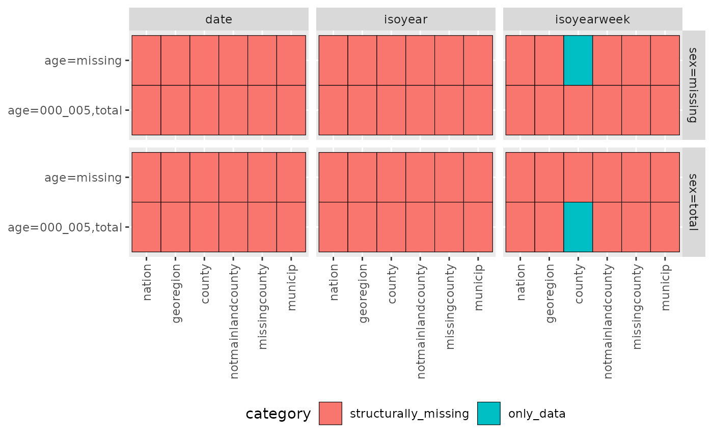

This document presents the data format
csfmt_rts_data_v2.
csfmt_rts_data_v2 is the data format that the CSIDS team
recommends using for the real-time surveillance of infectious
diseases.
Language
English is the primary language for our code.
Names that are abbreviations or in Norwegian are kept as they are:
data sources such as msis, daar,
sysvak, normomo.
Capital letters
Capital letters are to be avoided whenever possible. This is also the
case in filenames (e.g. data.rds is preferred to
data.RDS)
snake_case or camelCase?
Use snake_case.
Timestamping of file names
In results (e.g. reports), an indicator of time when the files are created are necessary. It allows us to find which one is the most recent version of files with the same names, and it allows easy tracking of an Airflow error.
e.g. Epidemiologisk_situasjonsrapport_2021-05-31_0659.docx
for a report generated on May 31, 2021 06:59 AM.
Sometimes variables need to be ordered. Variables should be ordered as follows:
e.g. A database table could be called
msis_by_time_location_age_sex or a filename could be called
2020_oslo_05-10_male.xlsx
Time functions can be obtained from cstime. Missing time data should
be coded as NA. Uncommon/internal use is demarcated by a
line through the text.
| Valid times in the csverse format | |||
| Time (Granularity) | Class | Function | Example(s) |
|---|---|---|---|
| date | Date | as.Date | 2021-12-31 |
| isoyear (numeric) | character | cstime::isoyear_n | 2021 |
| isoyearweek | character | cstime::isoyearweek_c | "2021-01" |
| event_*_date1_to_date21 | character | as.character | "event_covid19_norway_vaccination_2020_12_02_to_9999_09_09", "event_covid19_norway_2020_02_21_to_9999_09_09" |
| 1 If the event is ongoing, then the 'to' date should be 9999_09_09. | |||
Locations can be obtained from csdata. Valid locations (and
location types) are available in
csdata::nor_locations_names(). Uncommon/internal use is
demarcated by a line through the text.
| Valid locations and location types in the csverse format | ||||||
| Geo (Granularity) | N |
Examples
|
||||
|---|---|---|---|---|---|---|
| location_code1 | location_name2 | location_name_description_nb3 | location_name_file_nb_utf4 | location_name_file_nb_ascii5 | ||
| nation | 1 | nation_nor | Norge-Noreg-Norway | Norge-Noreg-Norway | Norge_Noreg_Norway | Norge_Noreg_Norway |
| georegion | 5 | georegion_nor1 | Nord-Norge-Davvi-Norggas | Nord-Norge-Davvi-Norggas (landsdel) | Nord_Norge_Davvi_Norggas_landsdel | Nord_Norge_Davvi_Norggas_landsdel |
| county | 15 | county_nor42 | Agder | Agder (fylke) | Agder_fylke | Agder_fylke |
| notmainlandcounty | 2 | notmainlandcounty_nor22 | Utenfor fastlands-Norge (Jan Mayen) | Utenfor fastlands-Norge (Jan Mayen) (fylke) | Utenfor_fastlands_Norge_Jan_Mayen_fylke | Utenfor_fastlands_Norge_Jan_Mayen_fylke |
| missingcounty | 1 | missingcounty_nor99 | Ukjent fylke | Ukjent fylke (fylke) | Ukjent_fylke | Ukjent_fylke |
| municip | 357 | municip_nor1820 | Alstahaug | Alstahaug (kommune i Nordland-Nordlándda) | Alstahaug_kommune_i_Nordland_Nordlándda | Alstahaug_kommune_i_Nordland_Nordlandda |
| notmainlandmunicip | 2 | notmainlandmunicip_nor2200 | Jan Mayen | Jan Mayen (kommune i Utenfor fastlands-Norge (Jan Mayen)) | Jan_Mayen_kommune_i_Utenfor_fastlands_Norge_Jan_Mayen | Jan_Mayen_kommune_i_Utenfor_fastlands_Norge_Jan_Mayen |
| missingmunicip | 1 | missingmunicip_nor9999 | Ukjent kommune | Ukjent kommune (kommune i Ukjent fylke) | Ukjent_kommune_i_Ukjent_fylke | Ukjent_kommune_i_Ukjent_fylke |
| wardoslo | 15 | wardoslo_nor030112 | Alna | Alna (bydel i Oslo-Oslove) | Alna_bydel_i_Oslo_Oslove | Alna_bydel_i_Oslo_Oslove |
| wardbergen | 8 | wardbergen_nor460101 | Arna | Arna (bydel i Bergen) | Arna_bydel_i_Bergen | Arna_bydel_i_Bergen |
| wardstavanger | 9 | wardstavanger_nor110303 | Eiganes og Våland | Eiganes og Våland (bydel i Stavanger) | Eiganes_og_Våland_bydel_i_Stavanger | Eiganes_og_Valand_bydel_i_Stavanger |
| wardtrondheim | 4 | wardtrondheim_nor500104 | Heimdal | Heimdal (bydel i Trondheim) | Heimdal_bydel_i_Trondheim | Heimdal_bydel_i_Trondheim |
| extrawardoslo | 2 | extrawardoslo_nor030117 | Marka | Marka (bydel i Oslo-Oslove) | Marka_bydel_i_Oslo_Oslove | Marka_bydel_i_Oslo_Oslove |
| missingwardbergen | 1 | missingwardbergen_nor460199 | Ukjent bydel i Bergen | Ukjent bydel i Bergen (bydel i Bergen) | Ukjent_bydel_i_Bergen | Ukjent_bydel_i_Bergen |
| missingwardoslo | 1 | missingwardoslo_nor030199 | Ukjent bydel i Oslo | Ukjent bydel i Oslo (bydel i Oslo-Oslove) | Ukjent_bydel_i_Oslo_Oslove | Ukjent_bydel_i_Oslo_Oslove |
| missingwardstavanger | 1 | missingwardstavanger_nor110399 | Ukjent bydel i Stavanger | Ukjent bydel i Stavanger (bydel i Stavanger) | Ukjent_bydel_i_Stavanger | Ukjent_bydel_i_Stavanger |
| missingwardtrondheim | 1 | missingwardtrondheim_nor500199 | Ukjent bydel i Trondheim | Ukjent bydel i Trondheim (bydel i Trondheim) | Ukjent_bydel_i_Trondheim | Ukjent_bydel_i_Trondheim |
| baregion6 | 159 | baregion_nor111 | Alstahaug | Alstahaug (BA-region) | Alstahaug_BA_region | Alstahaug_BA_region |
| mtregion | 5 | mtregion_nor4 | Midt-Norge | Midt-Norge (Mattilsynet-region) | Midt_Norge_Mattilsynet_region | Midt_Norge_Mattilsynet_region |
| lab | 26 | lab_nor000030 | Akershus Universitetssykehus | Akershus Universitetssykehus (lab) | Akershus_Universitetssykehus_lab | Akershus_Universitetssykehus_lab |
| 1 location_code: Used a) inside datasets and b) in data file names for transfer of data/results between analytic systems. All values are unique. | ||||||
| 2 location_name: Used (rarely) inside results (figures, tables, documents). Can be confusing as some names are duplicated. Its rare usage is demarcated by a line through the text. | ||||||
| 3 location_name_description_nb: Used (frequently) inside results (figures, tables, documents). All values are unique. | ||||||
| 4 location_name_file_nb_utf: Used (frequently) in the file names for results (figures, tables, documents). All values are unique. | ||||||
| 5 location_name_file_nb_ascii: Used (rarely) in the file names for results (figures, tables, documents). Used if file systems have problems with the Norwegian letters æøå. All values are unique. | ||||||
| 6 Bo- og arbeidsmarkedsregioner. Housing and labor market regions. | ||||||
Ages should be coded as characters and should always contain 3
digits. If it is an age range, the two ages are joined by an underscore
(e.g. 005_010).
Use 085p instead of >=085 or
85+, as this will allow for an easy conversion from long to
wide formatted data.
| Valid ages in the csverse format | ||
| Value | class | Definition |
|---|---|---|
| "000" | character | One year age group (0 year olds) |
| "079" | character | One year age group(79 year olds) |
| "000_004" | character | Age span of 0-4 year olds |
| "065p" | character | Age span of >=65 year olds |
| "missing" | character | Missing/unknown |
| "total" | character | Everyone |
This format will help your data be easily sorted, kept in the right order, and generate valid variable names if converted to wide-format.
Missing ages should be coded as “missing”.
Sex should be coded as characters.
| Valid sexes in the csverse format | ||
| Value | class | Definition |
|---|---|---|
| "male" | character | Male |
| "female" | character | Female |
| "missing" | character | Missing/unknown |
| "total" | character | Everyone |
Missing sexes should be coded as “missing”.
All datasets in the csverse format csfmt_rts_data_v2 will contain these 16 columns.
Time conversion functions can be found in package cstime.
| Unified columns (18) in the csverse format csfmt_rts_data_v2 | ||
| Variable | Accepted values | Definition |
|---|---|---|
| granularity_time | "date", "isoyearweek", "isoyear", "event_*_*_to_*" (Time) | Granularity of time |
| granularity_geo | "nation", "georegion", "county", "notmainlandcounty", "missingcounty", "municip", "notmainlandmunicip", "missingmunicip", "wardoslo", "wardbergen", "wardstavanger", "wardtrondheim", "extrawardoslo", "missingwardbergen", "missingwardoslo", "missingwardstavanger", "missingwardtrondheim", "baregion", "mtregion", "lab" | Granularity of geography |
| country_iso3 | "nor", "den", "swe", "fin" | ISO3 country code. |
| location_code | "norge", "countyXX", "municipXXXX", ... (Location) | Location code |
| border | 2020 | The borders (kommunesammenslåing) that location_code represents |
| age | "000", "001", "000_004", "065p", "total", "missing", ... (Age) | Age in years |
| sex | "male", "female", "total", "missing" (Sex) | Sex |
| isoyear | YYYY | Use function cstime::*_to_isoyear_n |
| isoweek | 1, 2, ..., 53 | Use functions cstime::*_to_isoweek_n |
| isoyearweek | "YYYY-WW" | Use function cstime::*_to_isoyearweek_c |
| isoquarter | 1, 2, 3, 4 | Use functions cstime::*_to_isoquarter_n |
| isoyearquarter | "2021-Q01" | Use function cstime::*_to_isoyearquarter_c |
| season | "YYYY/YYYY" | Seasons start in week 30 and finish in week 29. |
| seasonweek | 1, 2, ..., 23, 23.5, 24, ..., 52 | isoweek = 30 -> seasonweek = 1. isoweek = 52 -> seasonweek = 23. isoweek = 53 -> seasonweek = 23.5. isoweek = 1 -> seasonweek = 24. isoweek = 29 -> seasonweek = 52. This is used primarily for plotting/analysis reasons. |
| calyear | ..., 2020, 2021, ... | Calendar years. |
| calmonth | 1, 2, ..., 11, 12 | Calendar months. |
| calyearmonth | "2021-M01" | |
| date | YYYY-MM-DD | Always corresponds to the last date in the time period. E.g. if granularity_time=='isoweek' then date is the Sunday of that week. If granularity_time == 'event_*_date1_to_9999_09_09' then date is 9999-09-09 |
csfmt_rts_data_v2 does smart assignment for time and
geography.
When the variables in bold are assigned using
:=, the listed variables will be automatically imputed.
location_code:
isoyear:
isoyearweek:
date:
Variable names that are not part of the unified columns are called context-specific columns, and are made up of 2 mandatory (description, format) and 5 optional (time, statistics, forecast, censored/status, formatted) sections, separated by underscores.
The format is as follows:
Where [blah] indicates an optional argument. It is rare
that all of the optional arguments will be used at the same time.
| Context-specific columns in the csverse format csfmt_rts_data_v2 | ||
| Examples | Definition | |
|---|---|---|
| Description (mandatory) | ||
| deaths, consultations, cases | Simple. | |
| deaths_registered, deaths_nowcasted, deaths_nowcasted_baseline | Slightly complex. | |
| hospital_deaths, vax_administered_dose_1, vax_coverage_dose_1, msis_cases_testdate, msis_cases_regdate | Complex. | |
| outcome, exposure, model | Generally used in conjunction with 'tag' (see 'Format'). | |
| Time (optional) | ||
| sum0_13 | The sum of values for the given date and the previous 13 days. If granularity_time=='isoyearweek' and the given isoweek has full data, then it is the sum of values for the Sunday in the given isoweek and the previous 13 days. If granularity_time=='isoyearweek' and the given isoweek does not have full data, or granularity_time=='event_*_to_9999_09_09' (ongoing event), then it is the sum of values for the last day with data and the previous 13 days. | |
| sum0_999999 | The sum of all days with data. | |
| daymean0_13 | The mean of all the daily observations for the given date and the previous 13 days. | |
| isoweekmean0_13 | The mean of all the weekly observations for the given date and the previous 13 days (i.e. the last 2 weeks). | |
| Statistics (optional) | ||
| predinterval_q02x5 | Prediction interval for the baseline (2.5th quantile). 'x' is used to denominate a decimal point, so that we can differentiate between 100 (100x0) and 10.0 (10x0). | |
| credintervalobs_q02x5 | Credibility interval for a new observation of data according to the baseline model (2.5th quantile). | |
| credintervalmean_q02x5 | Credibility interval for the mean of the data according to the baseline model (2.5th quantile). | |
| *interval*_q50x0 | Generally speaking, the 50th percentile is the expected value. | |
| Format (mandatory) | ||
| id/tag | Used when data is in long format, to indicate an id variable. Frequently combined with descriptions of 'outcome', 'exposure', 'model'. id is used for numeric columns. tag is used for character columns. | |
| n | Numerical value | |
| pr1 | Proportion (between 0 and 1) | |
| pr100 | Percentage (between 0 and 100) | |
| pr100000, prX | Rate per X | |
| date | Date | |
| bool | TRUE/FALSE | |
| Forecast (optional) | ||
| forecast | TRUE/FALSE. Only used when a column contains both forecasted and non-forecasted data. | |
| Censored/Status (optional) | ||
| censored | TRUE/FALSE | |
| status | Character. | |
In the below examples, the description, time, statistics, format, and censor/status sections are separated by /.
An example relating to death and nowcasting:
An example relating to number of covid-19 cases:
An example relating to number of covid-19 tests:
An example relating to vaccination:
d <- cstidy::generate_test_data()[1:5]
cstidy::set_csfmt_rts_data_v2(d)
# Looking at the dataset
d[]
#> granularity_time granularity_geo country_iso3 location_code border age
#> <char> <char> <char> <char> <int> <char>
#> 1: isoyearweek county nor county_nor42 NA <NA>
#> 2: isoyearweek county nor county_nor32 NA <NA>
#> 3: isoyearweek county nor county_nor33 NA <NA>
#> 4: isoyearweek county nor county_nor56 NA <NA>
#> 5: isoyearweek county nor county_nor34 NA <NA>
#> sex isoyear isoweek isoyearweek isoquarter isoyearquarter season
#> <char> <int> <int> <char> <int> <char> <char>
#> 1: <NA> 2022 3 2022-03 1 2022-Q1 2021/2022
#> 2: <NA> 2022 3 2022-03 1 2022-Q1 2021/2022
#> 3: <NA> 2022 3 2022-03 1 2022-Q1 2021/2022
#> 4: <NA> 2022 3 2022-03 1 2022-Q1 2021/2022
#> 5: <NA> 2022 3 2022-03 1 2022-Q1 2021/2022
#> seasonweek calyear calmonth calyearmonth date deaths_n
#> <num> <int> <int> <char> <Date> <int>
#> 1: 21 NA NA <NA> 2022-01-23 6
#> 2: 21 NA NA <NA> 2022-01-23 7
#> 3: 21 NA NA <NA> 2022-01-23 5
#> 4: 21 NA NA <NA> 2022-01-23 3
#> 5: 21 NA NA <NA> 2022-01-23 8
# Smart assignment of time columns (note how granularity_time, isoyear, isoyearweek, date all change)
d[1, isoyearweek := "2021-01"]
d
#> granularity_time granularity_geo country_iso3 location_code border age
#> <char> <char> <char> <char> <int> <char>
#> 1: isoyearweek county nor county_nor42 NA <NA>
#> 2: isoyearweek county nor county_nor32 NA <NA>
#> 3: isoyearweek county nor county_nor33 NA <NA>
#> 4: isoyearweek county nor county_nor56 NA <NA>
#> 5: isoyearweek county nor county_nor34 NA <NA>
#> sex isoyear isoweek isoyearweek isoquarter isoyearquarter season
#> <char> <int> <int> <char> <int> <char> <char>
#> 1: <NA> 2021 1 2021-01 1 2021-Q1 2020/2021
#> 2: <NA> 2022 3 2022-03 1 2022-Q1 2021/2022
#> 3: <NA> 2022 3 2022-03 1 2022-Q1 2021/2022
#> 4: <NA> 2022 3 2022-03 1 2022-Q1 2021/2022
#> 5: <NA> 2022 3 2022-03 1 2022-Q1 2021/2022
#> seasonweek calyear calmonth calyearmonth date deaths_n
#> <num> <int> <int> <char> <Date> <int>
#> 1: 19 NA NA <NA> 2021-01-10 6
#> 2: 21 NA NA <NA> 2022-01-23 7
#> 3: 21 NA NA <NA> 2022-01-23 5
#> 4: 21 NA NA <NA> 2022-01-23 3
#> 5: 21 NA NA <NA> 2022-01-23 8
# Smart assignment of time columns (note how granularity_time, isoyear, isoyearweek, date all change)
d[2, isoyear := 2019]
d
#> granularity_time granularity_geo country_iso3 location_code border age
#> <char> <char> <char> <char> <int> <char>
#> 1: isoyearweek county nor county_nor42 NA <NA>
#> 2: isoyear county nor county_nor32 NA <NA>
#> 3: isoyearweek county nor county_nor33 NA <NA>
#> 4: isoyearweek county nor county_nor56 NA <NA>
#> 5: isoyearweek county nor county_nor34 NA <NA>
#> sex isoyear isoweek isoyearweek isoquarter isoyearquarter season
#> <char> <int> <int> <char> <int> <char> <char>
#> 1: <NA> 2021 1 2021-01 1 2021-Q1 2020/2021
#> 2: <NA> 2019 52 2019-52 1 2022-Q1 <NA>
#> 3: <NA> 2022 3 2022-03 1 2022-Q1 2021/2022
#> 4: <NA> 2022 3 2022-03 1 2022-Q1 2021/2022
#> 5: <NA> 2022 3 2022-03 1 2022-Q1 2021/2022
#> seasonweek calyear calmonth calyearmonth date deaths_n
#> <num> <int> <int> <char> <Date> <int>
#> 1: 19 NA NA <NA> 2021-01-10 6
#> 2: NA NA NA <NA> 2019-12-29 7
#> 3: 21 NA NA <NA> 2022-01-23 5
#> 4: 21 NA NA <NA> 2022-01-23 3
#> 5: 21 NA NA <NA> 2022-01-23 8
# Smart assignment of time columns (note how granularity_time, isoyear, isoyearweek, date all change)
d[4:5, date := as.Date("2020-01-01")]
d
#> granularity_time granularity_geo country_iso3 location_code border age
#> <char> <char> <char> <char> <int> <char>
#> 1: isoyearweek county nor county_nor42 NA <NA>
#> 2: isoyear county nor county_nor32 NA <NA>
#> 3: isoyearweek county nor county_nor33 NA <NA>
#> 4: date county nor county_nor56 NA <NA>
#> 5: date county nor county_nor34 NA <NA>
#> sex isoyear isoweek isoyearweek isoquarter isoyearquarter season
#> <char> <int> <int> <char> <int> <char> <char>
#> 1: <NA> 2021 1 2021-01 1 2021-Q1 2020/2021
#> 2: <NA> 2019 52 2019-52 1 2022-Q1 <NA>
#> 3: <NA> 2022 3 2022-03 1 2022-Q1 2021/2022
#> 4: <NA> 2020 1 2020-01 1 2020-Q1 2019/2020
#> 5: <NA> 2020 1 2020-01 1 2020-Q1 2019/2020
#> seasonweek calyear calmonth calyearmonth date deaths_n
#> <num> <int> <int> <char> <Date> <int>
#> 1: 19 NA NA <NA> 2021-01-10 6
#> 2: NA NA NA <NA> 2019-12-29 7
#> 3: 21 NA NA <NA> 2022-01-23 5
#> 4: 19 2020 1 2020-M01 2020-01-01 3
#> 5: 19 2020 1 2020-M01 2020-01-01 8
# Smart assignment fails when multiple time columns are set
d[1, c("isoyear", "isoyearweek") := .(2021, "2021-01")]
#> Warning in `[.csfmt_rts_data_v2`(d, 1, `:=`(c("isoyear", "isoyearweek"), :
#> Multiple time variables specified. Smart-assignment disabled.
d
#> granularity_time granularity_geo country_iso3 location_code border age
#> <char> <char> <char> <char> <int> <char>
#> 1: isoyearweek county nor county_nor42 NA <NA>
#> 2: isoyear county nor county_nor32 NA <NA>
#> 3: isoyearweek county nor county_nor33 NA <NA>
#> 4: date county nor county_nor56 NA <NA>
#> 5: date county nor county_nor34 NA <NA>
#> sex isoyear isoweek isoyearweek isoquarter isoyearquarter season
#> <char> <int> <int> <char> <int> <char> <char>
#> 1: <NA> 2021 1 2021-01 1 2021-Q1 2020/2021
#> 2: <NA> 2019 52 2019-52 1 2022-Q1 <NA>
#> 3: <NA> 2022 3 2022-03 1 2022-Q1 2021/2022
#> 4: <NA> 2020 1 2020-01 1 2020-Q1 2019/2020
#> 5: <NA> 2020 1 2020-01 1 2020-Q1 2019/2020
#> seasonweek calyear calmonth calyearmonth date deaths_n
#> <num> <int> <int> <char> <Date> <int>
#> 1: 19 NA NA <NA> 2021-01-10 6
#> 2: NA NA NA <NA> 2019-12-29 7
#> 3: 21 NA NA <NA> 2022-01-23 5
#> 4: 19 2020 1 2020-M01 2020-01-01 3
#> 5: 19 2020 1 2020-M01 2020-01-01 8
# Smart assignment of geo columns
d[1, c("location_code") := .("norge")]
d
#> granularity_time granularity_geo country_iso3 location_code border age
#> <char> <char> <char> <char> <int> <char>
#> 1: isoyearweek nation nor norge NA <NA>
#> 2: isoyear county nor county_nor32 NA <NA>
#> 3: isoyearweek county nor county_nor33 NA <NA>
#> 4: date county nor county_nor56 NA <NA>
#> 5: date county nor county_nor34 NA <NA>
#> sex isoyear isoweek isoyearweek isoquarter isoyearquarter season
#> <char> <int> <int> <char> <int> <char> <char>
#> 1: <NA> 2021 1 2021-01 1 2021-Q1 2020/2021
#> 2: <NA> 2019 52 2019-52 1 2022-Q1 <NA>
#> 3: <NA> 2022 3 2022-03 1 2022-Q1 2021/2022
#> 4: <NA> 2020 1 2020-01 1 2020-Q1 2019/2020
#> 5: <NA> 2020 1 2020-01 1 2020-Q1 2019/2020
#> seasonweek calyear calmonth calyearmonth date deaths_n
#> <num> <int> <int> <char> <Date> <int>
#> 1: 19 NA NA <NA> 2021-01-10 6
#> 2: NA NA NA <NA> 2019-12-29 7
#> 3: 21 NA NA <NA> 2022-01-23 5
#> 4: 19 2020 1 2020-M01 2020-01-01 3
#> 5: 19 2020 1 2020-M01 2020-01-01 8
# Collapsing down to different levels, and healing the dataset
# (so that it can be worked on further with regards to real time surveillance)
d[, .(deaths_n = sum(deaths_n), location_code = "norge"), keyby = .(granularity_time)] %>%
cstidy::set_csfmt_rts_data_v2(create_unified_columns = TRUE) %>%
print()
#> granularity_time granularity_geo country_iso3 location_code border age
#> <char> <char> <char> <char> <int> <char>
#> 1: date nation nor norge NA <NA>
#> 2: isoyear nation nor norge NA <NA>
#> 3: isoyearweek nation nor norge NA <NA>
#> sex isoyear isoweek isoyearweek isoquarter isoyearquarter season
#> <char> <int> <int> <char> <int> <char> <char>
#> 1: <NA> NA NA <NA> NA <NA> <NA>
#> 2: <NA> NA NA <NA> NA <NA> <NA>
#> 3: <NA> NA NA <NA> NA <NA> <NA>
#> seasonweek calyear calmonth calyearmonth date deaths_n
#> <num> <int> <int> <char> <Date> <int>
#> 1: NA NA NA <NA> <NA> 11
#> 2: NA NA NA <NA> <NA> 7
#> 3: NA NA NA <NA> <NA> 11
# Collapsing down to different levels, without healing the dataset and without
# removing the class csfmt_rts_data_v2 (this is uncommon)
d[, .(deaths_n = sum(deaths_n), location_code = "norge"), keyby = .(granularity_time)] %>%
print()
#> Key: <granularity_time>
#> granularity_time deaths_n location_code
#> <char> <int> <char>
#> 1: date 11 norge
#> 2: isoyear 7 norge
#> 3: isoyearweek 11 norge
# Collapsing to different levels, and removing the class csfmt_rts_data_v2 because
# it is going to be used in new output/analyses
d[, .(deaths_n = sum(deaths_n), location_code = "norge"), keyby = .(granularity_time)] %>%
cstidy::remove_class_csfmt_rts_data() %>%
print()
#> Key: <granularity_time>
#> granularity_time deaths_n location_code
#> <char> <int> <char>
#> 1: date 11 norge
#> 2: isoyear 7 norge
#> 3: isoyearweek 11 norgeSometimes you need to expand the number of rows in a dataset to a future time.
cstidy::generate_test_data() %>%
cstidy::set_csfmt_rts_data_v2() %>%
dplyr::filter(location_code == "county03") %>%
cstidy::expand_time_to(max_isoyearweek = "2022-08") %>%
print()
#> Null data.table (0 rows and 0 cols)We might also need to identify how many time series are in one dataset.
cstidy::generate_test_data() %>%
cstidy::set_csfmt_rts_data_v2() %>%
cstidy::unique_time_series()We need a way to easily summarize the data structure of a dataset.
cstidy::generate_test_data() %>%
cstidy::set_csfmt_rts_data_v2() %>%
summary()
#>
#> granularity_time
#> ✅ No errors
#>
#> granularity_geo
#> ✅ No errors
#>
#> country_iso3
#> ✅ No errors
#>
#> location_code
#> ✅ No errors
#>
#> border
#> ❌ Errors:
#> - NA exists (not allowed)
#>
#> age
#> ✅ No errors
#>
#> sex
#> ✅ No errors
#>
#> isoyear
#> ✅ No errors
#>
#> isoweek
#> ✅ No errors
#>
#> isoyearweek
#> ✅ No errors
#>
#> isoquarter
#> ✅ No errors
#>
#> isoyearquarter
#> ✅ No errors
#>
#> season
#> ✅ No errors
#>
#> seasonweek
#> ✅ No errors
#>
#> calyear
#> ✅ No errors
#>
#> calmonth
#> ✅ No errors
#>
#> calyearmonth
#> ✅ No errors
#>
#> date
#> ✅ No errors
#> granularity_time (character):
#> - isoyearweek (n = 45)
#> granularity_geo (character):
#> - county (n = 45)
#> country_iso3 (character):
#> - nor (n = 45)
#> location_code (character)
#> border (integer):
#> - <NA> (n = 45)
#> age (character):
#> - <NA> (n = 15)
#> - 000_005 (n = 15)
#> - total (n = 15)
#> sex (character):
#> - <NA> (n = 15)
#> - total (n = 30)
#> isoyear (integer):
#> - 2022 (n = 45)
#> isoweek (integer)
#> isoyearweek (character)
#> isoquarter (integer)
#> isoyearquarter (character)
#> season (character):
#> - 2021/2022 (n = 45)
#> seasonweek (numeric)
#> calyear (integer)
#> calmonth (integer)
#> calyearmonth (character)
#> date (Date)
#> deaths_n (integer)We need a way to easily summarize the data structure of one column inside a dataset.
cstidy::generate_test_data() %>%
cstidy::set_csfmt_rts_data_v2() %>%
cstidy::identify_data_structure("deaths_n") %>%
plot()
Locations can be obtained from csdata. Valid locations (and
location types) are available in
csdata::nor_locations_names().
Here we list as a reference table the valid
location_codes and
location_name_description_nbs (the two most commonly used
locations).
| Reference table of location_code and location_name_description_nb | ||
| # | location_code | location_name_description_nb |
|---|---|---|
| #1 | nation_nor | Norge-Noreg-Norway |
| #2 | georegion_nor1 | Nord-Norge-Davvi-Norggas (landsdel) |
| #3 | georegion_nor2 | Trøndelag-Trööndelage (landsdel) |
| #4 | georegion_nor3 | Vestlandet (landsdel) |
| #5 | georegion_nor4 | Agder (landsdel) |
| #6 | georegion_nor5 | Østlandet-Austlandet (landsdel) |
| #7 | county_nor42 | Agder (fylke) |
| #8 | county_nor32 | Akershus (fylke) |
| #9 | county_nor33 | Buskerud (fylke) |
| #10 | county_nor56 | Finnmark-Finnmárkku (fylke) |
| #11 | county_nor34 | Innlandet-Sisdajven (fylke) |
| #12 | county_nor15 | Møre og Romsdal (fylke) |
| #13 | county_nor18 | Nordland-Nordlándda (fylke) |
| #14 | county_nor03 | Oslo-Oslove (fylke) |
| #15 | county_nor11 | Rogaland (fylke) |
| #16 | county_nor40 | Telemark (fylke) |
| #17 | county_nor55 | Troms-Romssa (fylke) |
| #18 | county_nor50 | Trøndelag-Trööndelage (fylke) |
| #19 | county_nor39 | Vestfold (fylke) |
| #20 | county_nor46 | Vestland (fylke) |
| #21 | county_nor31 | Østfold (fylke) |
| #22 | notmainlandcounty_nor22 | Utenfor fastlands-Norge (Jan Mayen) (fylke) |
| #23 | notmainlandcounty_nor21 | Utenfor fastlands-Norge (Svalbard) (fylke) |
| #24 | missingcounty_nor99 | Ukjent fylke (fylke) |
| #25 | municip_nor1820 | Alstahaug (kommune i Nordland-Nordlándda) |
| #26 | municip_nor5601 | Alta (kommune i Finnmark-Finnmárkku) |
| #27 | municip_nor3428 | Alvdal (kommune i Innlandet-Sisdajven) |
| #28 | municip_nor4631 | Alver (kommune i Vestland) |
| #29 | municip_nor1871 | Andøy (kommune i Nordland-Nordlándda) |
| #30 | municip_nor3124 | Aremark (kommune i Østfold) |
| #31 | municip_nor4203 | Arendal (kommune i Agder) |
| #32 | municip_nor3203 | Asker (kommune i Akershus) |
| #33 | municip_nor4645 | Askvoll (kommune i Vestland) |
| #34 | municip_nor4627 | Askøy (kommune i Vestland) |
| #35 | municip_nor1547 | Aukra (kommune i Møre og Romsdal) |
| #36 | municip_nor1576 | Aure (kommune i Møre og Romsdal) |
| #37 | municip_nor4641 | Aurland (kommune i Vestland) |
| #38 | municip_nor3226 | Aurskog-Høland (kommune i Akershus) |
| #39 | municip_nor4625 | Austevoll (kommune i Vestland) |
| #40 | municip_nor4632 | Austrheim (kommune i Vestland) |
| #41 | municip_nor1554 | Averøy (kommune i Møre og Romsdal) |
| #42 | municip_nor5532 | Balsfjord (kommune i Troms-Romssa) |
| #43 | municip_nor4012 | Bamble (kommune i Telemark) |
| #44 | municip_nor5520 | Bardu (kommune i Troms-Romssa) |
| #45 | municip_nor1839 | Beiarn (kommune i Nordland-Nordlándda) |
| #46 | municip_nor4601 | Bergen (kommune i Vestland) |
| #47 | municip_nor5630 | Berlevåg (kommune i Finnmark-Finnmárkku) |
| #48 | municip_nor1811 | Bindal (kommune i Nordland-Nordlándda) |
| #49 | municip_nor4216 | Birkenes (kommune i Agder) |
| #50 | municip_nor1114 | Bjerkreim (kommune i Rogaland) |
| #51 | municip_nor4624 | Bjørnafjorden (kommune i Vestland) |
| #52 | municip_nor1804 | Bodø (kommune i Nordland-Nordlándda) |
| #53 | municip_nor1145 | Bokn (kommune i Rogaland) |
| #54 | municip_nor4648 | Bremanger (kommune i Vestland) |
| #55 | municip_nor1813 | Brønnøy (kommune i Nordland-Nordlándda) |
| #56 | municip_nor4220 | Bygland (kommune i Agder) |
| #57 | municip_nor4222 | Bykle (kommune i Agder) |
| #58 | municip_nor5632 | Båtsfjord (kommune i Finnmark-Finnmárkku) |
| #59 | municip_nor3201 | Bærum (kommune i Akershus) |
| #60 | municip_nor1867 | Bø (kommune i Nordland-Nordlándda) |
| #61 | municip_nor4613 | Bømlo (kommune i Vestland) |
| #62 | municip_nor5628 | Deatnu-Tana (kommune i Finnmark-Finnmárkku) |
| #63 | municip_nor3431 | Dovre (kommune i Innlandet-Sisdajven) |
| #64 | municip_nor3301 | Drammen (kommune i Buskerud) |
| #65 | municip_nor4016 | Drangedal (kommune i Telemark) |
| #66 | municip_nor5528 | Dyrøy (kommune i Troms-Romssa) |
| #67 | municip_nor1827 | Dønna (kommune i Nordland-Nordlándda) |
| #68 | municip_nor4619 | Eidfjord (kommune i Vestland) |
| #69 | municip_nor3416 | Eidskog (kommune i Innlandet-Sisdajven) |
| #70 | municip_nor3240 | Eidsvoll (kommune i Akershus) |
| #71 | municip_nor1101 | Eigersund (kommune i Rogaland) |
| #72 | municip_nor3420 | Elverum (kommune i Innlandet-Sisdajven) |
| #73 | municip_nor3220 | Enebakk (kommune i Akershus) |
| #74 | municip_nor3425 | Engerdal (kommune i Innlandet-Sisdajven) |
| #75 | municip_nor4611 | Etne (kommune i Vestland) |
| #76 | municip_nor3450 | Etnedal (kommune i Innlandet-Sisdajven) |
| #77 | municip_nor1853 | Evenes (kommune i Nordland-Nordlándda) |
| #78 | municip_nor4219 | Evje og Hornnes (kommune i Agder) |
| #79 | municip_nor4206 | Farsund (kommune i Agder) |
| #80 | municip_nor1841 | Fauske-Fuosko (kommune i Nordland-Nordlándda) |
| #81 | municip_nor4633 | Fedje (kommune i Vestland) |
| #82 | municip_nor4615 | Fitjar (kommune i Vestland) |
| #83 | municip_nor4646 | Fjaler (kommune i Vestland) |
| #84 | municip_nor1578 | Fjord (kommune i Møre og Romsdal) |
| #85 | municip_nor1859 | Flakstad (kommune i Nordland-Nordlándda) |
| #86 | municip_nor5049 | Flatanger (kommune i Trøndelag-Trööndelage) |
| #87 | municip_nor4207 | Flekkefjord (kommune i Agder) |
| #88 | municip_nor3334 | Flesberg (kommune i Buskerud) |
| #89 | municip_nor3320 | Flå (kommune i Buskerud) |
| #90 | municip_nor3429 | Folldal (kommune i Innlandet-Sisdajven) |
| #91 | municip_nor3107 | Fredrikstad (kommune i Østfold) |
| #92 | municip_nor3214 | Frogn (kommune i Akershus) |
| #93 | municip_nor4214 | Froland (kommune i Agder) |
| #94 | municip_nor5036 | Frosta (kommune i Trøndelag-Trööndelage) |
| #95 | municip_nor5014 | Frøya (kommune i Trøndelag-Trööndelage) |
| #96 | municip_nor4032 | Fyresdal (kommune i Telemark) |
| #97 | municip_nor3911 | Færder (kommune i Vestfold) |
| #98 | municip_nor5626 | Gamvik (kommune i Finnmark-Finnmárkku) |
| #99 | municip_nor3441 | Gausdal (kommune i Innlandet-Sisdajven) |
| #100 | municip_nor1838 | Gildeskål (kommune i Nordland-Nordlándda) |
| #101 | municip_nor1532 | Giske (kommune i Møre og Romsdal) |
| #102 | municip_nor1557 | Gjemnes (kommune i Møre og Romsdal) |
| #103 | municip_nor3230 | Gjerdrum (kommune i Akershus) |
| #104 | municip_nor4211 | Gjerstad (kommune i Agder) |
| #105 | municip_nor1122 | Gjesdal (kommune i Rogaland) |
| #106 | municip_nor3407 | Gjøvik (kommune i Innlandet-Sisdajven) |
| #107 | municip_nor4650 | Gloppen (kommune i Vestland) |
| #108 | municip_nor3324 | Gol (kommune i Buskerud) |
| #109 | municip_nor3446 | Gran (kommune i Innlandet-Sisdajven) |
| #110 | municip_nor1825 | Grane (kommune i Nordland-Nordlándda) |
| #111 | municip_nor5516 | Gratangen (kommune i Troms-Romssa) |
| #112 | municip_nor4202 | Grimstad (kommune i Agder) |
| #113 | municip_nor5045 | Grong (kommune i Trøndelag-Trööndelage) |
| #114 | municip_nor3417 | Grue (kommune i Innlandet-Sisdajven) |
| #115 | municip_nor4635 | Gulen (kommune i Vestland) |
| #116 | municip_nor5612 | Guovdageaidnu-Kautokeino (kommune i Finnmark-Finnmárkku) |
| #117 | municip_nor5540 | Gáivuotna-Kåfjord-Kaivuono (kommune i Troms-Romssa) |
| #118 | municip_nor1866 | Hadsel (kommune i Nordland-Nordlándda) |
| #119 | municip_nor3101 | Halden (kommune i Østfold) |
| #120 | municip_nor3403 | Hamar (kommune i Innlandet-Sisdajven) |
| #121 | municip_nor1875 | Hamarøy (kommune i Nordland-Nordlándda) |
| #122 | municip_nor5603 | Hammerfest (kommune i Finnmark-Finnmárkku) |
| #123 | municip_nor1580 | Haram (kommune i Møre og Romsdal) |
| #124 | municip_nor1517 | Hareid (kommune i Møre og Romsdal) |
| #125 | municip_nor5503 | Harstad (kommune i Troms-Romssa) |
| #126 | municip_nor5616 | Hasvik (kommune i Finnmark-Finnmárkku) |
| #127 | municip_nor1826 | Hattfjelldal (kommune i Nordland-Nordlándda) |
| #128 | municip_nor1106 | Haugesund (kommune i Rogaland) |
| #129 | municip_nor5055 | Heim (kommune i Trøndelag-Trööndelage) |
| #130 | municip_nor1832 | Hemnes (kommune i Nordland-Nordlándda) |
| #131 | municip_nor3326 | Hemsedal (kommune i Buskerud) |
| #132 | municip_nor1515 | Herøy (kommune i Møre og Romsdal) |
| #133 | municip_nor1818 | Herøy (kommune i Nordland-Nordlándda) |
| #134 | municip_nor5056 | Hitra (kommune i Trøndelag-Trööndelage) |
| #135 | municip_nor4024 | Hjartdal (kommune i Telemark) |
| #136 | municip_nor1133 | Hjelmeland (kommune i Rogaland) |
| #137 | municip_nor3330 | Hol (kommune i Buskerud) |
| #138 | municip_nor3310 | Hole (kommune i Buskerud) |
| #139 | municip_nor3903 | Holmestrand (kommune i Vestfold) |
| #140 | municip_nor5026 | Holtålen (kommune i Trøndelag-Trööndelage) |
| #141 | municip_nor3901 | Horten (kommune i Vestfold) |
| #142 | municip_nor3242 | Hurdal (kommune i Akershus) |
| #143 | municip_nor1579 | Hustadvika (kommune i Møre og Romsdal) |
| #144 | municip_nor3110 | Hvaler (kommune i Østfold) |
| #145 | municip_nor4637 | Hyllestad (kommune i Vestland) |
| #146 | municip_nor1119 | Hå (kommune i Rogaland) |
| #147 | municip_nor4226 | Hægebostad (kommune i Agder) |
| #148 | municip_nor4638 | Høyanger (kommune i Vestland) |
| #149 | municip_nor5046 | Høylandet (kommune i Trøndelag-Trööndelage) |
| #150 | municip_nor5514 | Ibestad (kommune i Troms-Romssa) |
| #151 | municip_nor5053 | Inderøy (kommune i Trøndelag-Trööndelage) |
| #152 | municip_nor5054 | Indre Fosen (kommune i Trøndelag-Trööndelage) |
| #153 | municip_nor3118 | Indre Østfold (kommune i Østfold) |
| #154 | municip_nor4218 | Iveland (kommune i Agder) |
| #155 | municip_nor3236 | Jevnaker (kommune i Akershus) |
| #156 | municip_nor5534 | Karlsøy (kommune i Troms-Romssa) |
| #157 | municip_nor1149 | Karmøy (kommune i Rogaland) |
| #158 | municip_nor4602 | Kinn (kommune i Vestland) |
| #159 | municip_nor1120 | Klepp (kommune i Rogaland) |
| #160 | municip_nor3303 | Kongsberg (kommune i Buskerud) |
| #161 | municip_nor3401 | Kongsvinger (kommune i Innlandet-Sisdajven) |
| #162 | municip_nor4014 | Kragerø (kommune i Telemark) |
| #163 | municip_nor4204 | Kristiansand (kommune i Agder) |
| #164 | municip_nor1505 | Kristiansund (kommune i Møre og Romsdal) |
| #165 | municip_nor3318 | Krødsherad (kommune i Buskerud) |
| #166 | municip_nor4622 | Kvam (kommune i Vestland) |
| #167 | municip_nor4227 | Kvinesdal (kommune i Agder) |
| #168 | municip_nor4617 | Kvinnherad (kommune i Vestland) |
| #169 | municip_nor4028 | Kviteseid (kommune i Telemark) |
| #170 | municip_nor1144 | Kvitsøy (kommune i Rogaland) |
| #171 | municip_nor5510 | Kvæfjord (kommune i Troms-Romssa) |
| #172 | municip_nor5546 | Kvænangen (kommune i Troms-Romssa) |
| #173 | municip_nor5610 | Kárášjohka-Karasjok (kommune i Finnmark-Finnmárkku) |
| #174 | municip_nor3909 | Larvik (kommune i Vestfold) |
| #175 | municip_nor5624 | Lebesby (kommune i Finnmark-Finnmárkku) |
| #176 | municip_nor1822 | Leirfjord (kommune i Nordland-Nordlándda) |
| #177 | municip_nor5052 | Leka (kommune i Trøndelag-Trööndelage) |
| #178 | municip_nor3432 | Lesja (kommune i Innlandet-Sisdajven) |
| #179 | municip_nor5037 | Levanger (kommune i Trøndelag-Trööndelage) |
| #180 | municip_nor3312 | Lier (kommune i Buskerud) |
| #181 | municip_nor5042 | Lierne (kommune i Trøndelag-Trööndelage) |
| #182 | municip_nor3405 | Lillehammer (kommune i Innlandet-Sisdajven) |
| #183 | municip_nor4215 | Lillesand (kommune i Agder) |
| #184 | municip_nor3205 | Lillestrøm (kommune i Akershus) |
| #185 | municip_nor4205 | Lindesnes (kommune i Agder) |
| #186 | municip_nor5518 | Loabák-Lavangen (kommune i Troms-Romssa) |
| #187 | municip_nor3434 | Lom (kommune i Innlandet-Sisdajven) |
| #188 | municip_nor5614 | Loppa (kommune i Finnmark-Finnmárkku) |
| #189 | municip_nor1112 | Lund (kommune i Rogaland) |
| #190 | municip_nor3234 | Lunner (kommune i Akershus) |
| #191 | municip_nor1834 | Lurøy (kommune i Nordland-Nordlándda) |
| #192 | municip_nor4644 | Luster (kommune i Vestland) |
| #193 | municip_nor4225 | Lyngdal (kommune i Agder) |
| #194 | municip_nor5536 | Lyngen (kommune i Troms-Romssa) |
| #195 | municip_nor4642 | Lærdal (kommune i Vestland) |
| #196 | municip_nor1851 | Lødingen (kommune i Nordland-Nordlándda) |
| #197 | municip_nor3222 | Lørenskog (kommune i Akershus) |
| #198 | municip_nor3412 | Løten (kommune i Innlandet-Sisdajven) |
| #199 | municip_nor5031 | Malvik (kommune i Trøndelag-Trööndelage) |
| #200 | municip_nor3122 | Marker (kommune i Østfold) |
| #201 | municip_nor4634 | Masfjorden (kommune i Vestland) |
| #202 | municip_nor5028 | Melhus (kommune i Trøndelag-Trööndelage) |
| #203 | municip_nor1837 | Meløy (kommune i Nordland-Nordlándda) |
| #204 | municip_nor5034 | Meråker (kommune i Trøndelag-Trööndelage) |
| #205 | municip_nor4020 | Midt-Telemark (kommune i Telemark) |
| #206 | municip_nor5027 | Midtre Gauldal (kommune i Trøndelag-Trööndelage) |
| #207 | municip_nor4629 | Modalen (kommune i Vestland) |
| #208 | municip_nor3316 | Modum (kommune i Buskerud) |
| #209 | municip_nor1506 | Molde (kommune i Møre og Romsdal) |
| #210 | municip_nor1874 | Moskenes (kommune i Nordland-Nordlándda) |
| #211 | municip_nor3103 | Moss (kommune i Østfold) |
| #212 | municip_nor5524 | Målselv (kommune i Troms-Romssa) |
| #213 | municip_nor5618 | Måsøy (kommune i Finnmark-Finnmárkku) |
| #214 | municip_nor5007 | Namsos (kommune i Trøndelag-Trööndelage) |
| #215 | municip_nor5044 | Namsskogan (kommune i Trøndelag-Trööndelage) |
| #216 | municip_nor3238 | Nannestad (kommune i Akershus) |
| #217 | municip_nor1806 | Narvik (kommune i Nordland-Nordlándda) |
| #218 | municip_nor3228 | Nes (kommune i Akershus) |
| #219 | municip_nor3322 | Nesbyen (kommune i Buskerud) |
| #220 | municip_nor1828 | Nesna (kommune i Nordland-Nordlándda) |
| #221 | municip_nor3212 | Nesodden (kommune i Akershus) |
| #222 | municip_nor4030 | Nissedal (kommune i Telemark) |
| #223 | municip_nor3232 | Nittedal (kommune i Akershus) |
| #224 | municip_nor4018 | Nome (kommune i Telemark) |
| #225 | municip_nor3451 | Nord-Aurdal (kommune i Innlandet-Sisdajven) |
| #226 | municip_nor3436 | Nord-Fron (kommune i Innlandet-Sisdajven) |
| #227 | municip_nor3414 | Nord-Odal (kommune i Innlandet-Sisdajven) |
| #228 | municip_nor5620 | Nordkapp (kommune i Finnmark-Finnmárkku) |
| #229 | municip_nor3207 | Nordre Follo (kommune i Akershus) |
| #230 | municip_nor3448 | Nordre Land (kommune i Innlandet-Sisdajven) |
| #231 | municip_nor5544 | Nordreisa (kommune i Troms-Romssa) |
| #232 | municip_nor3338 | Nore og Uvdal (kommune i Buskerud) |
| #233 | municip_nor4005 | Notodden (kommune i Telemark) |
| #234 | municip_nor5060 | Nærøysund (kommune i Trøndelag-Trööndelage) |
| #235 | municip_nor5021 | Oppdal (kommune i Trøndelag-Trööndelage) |
| #236 | municip_nor5059 | Orkland (kommune i Trøndelag-Trööndelage) |
| #237 | municip_nor3430 | Os (kommune i Innlandet-Sisdajven) |
| #238 | municip_nor5020 | Osen (kommune i Trøndelag-Trööndelage) |
| #239 | municip_nor0301 | Oslo-Oslove (kommune i Oslo-Oslove) |
| #240 | municip_nor4630 | Osterøy (kommune i Vestland) |
| #241 | municip_nor5047 | Overhalla (kommune i Trøndelag-Trööndelage) |
| #242 | municip_nor5622 | Porsanger-Porsáŋgu-Porsanki (kommune i Finnmark-Finnmárkku) |
| #243 | municip_nor4001 | Porsgrunn (kommune i Telemark) |
| #244 | municip_nor5043 | Raarvihke-Røyrvik (kommune i Trøndelag-Trööndelage) |
| #245 | municip_nor3120 | Rakkestad (kommune i Østfold) |
| #246 | municip_nor1833 | Rana (kommune i Nordland-Nordlándda) |
| #247 | municip_nor1127 | Randaberg (kommune i Rogaland) |
| #248 | municip_nor1539 | Rauma (kommune i Møre og Romsdal) |
| #249 | municip_nor3424 | Rendalen (kommune i Innlandet-Sisdajven) |
| #250 | municip_nor5022 | Rennebu (kommune i Trøndelag-Trööndelage) |
| #251 | municip_nor5061 | Rindal (kommune i Trøndelag-Trööndelage) |
| #252 | municip_nor3439 | Ringebu (kommune i Innlandet-Sisdajven) |
| #253 | municip_nor3305 | Ringerike (kommune i Buskerud) |
| #254 | municip_nor3411 | Ringsaker (kommune i Innlandet-Sisdajven) |
| #255 | municip_nor4201 | Risør (kommune i Agder) |
| #256 | municip_nor3336 | Rollag (kommune i Buskerud) |
| #257 | municip_nor3112 | Råde (kommune i Østfold) |
| #258 | municip_nor3224 | Rælingen (kommune i Akershus) |
| #259 | municip_nor1836 | Rødøy (kommune i Nordland-Nordlándda) |
| #260 | municip_nor5025 | Røros (kommune i Trøndelag-Trööndelage) |
| #261 | municip_nor1856 | Røst (kommune i Nordland-Nordlándda) |
| #262 | municip_nor5522 | Salangen (kommune i Troms-Romssa) |
| #263 | municip_nor1840 | Saltdal (kommune i Nordland-Nordlándda) |
| #264 | municip_nor4623 | Samnanger (kommune i Vestland) |
| #265 | municip_nor1514 | Sande (kommune i Møre og Romsdal) |
| #266 | municip_nor3907 | Sandefjord (kommune i Vestfold) |
| #267 | municip_nor1108 | Sandnes (kommune i Rogaland) |
| #268 | municip_nor3105 | Sarpsborg (kommune i Østfold) |
| #269 | municip_nor1135 | Sauda (kommune i Rogaland) |
| #270 | municip_nor3437 | Sel (kommune i Innlandet-Sisdajven) |
| #271 | municip_nor5032 | Selbu (kommune i Trøndelag-Trööndelage) |
| #272 | municip_nor4022 | Seljord (kommune i Telemark) |
| #273 | municip_nor5530 | Senja (kommune i Troms-Romssa) |
| #274 | municip_nor3332 | Sigdal (kommune i Buskerud) |
| #275 | municip_nor4010 | Siljan (kommune i Telemark) |
| #276 | municip_nor4228 | Sirdal (kommune i Agder) |
| #277 | municip_nor5029 | Skaun (kommune i Trøndelag-Trööndelage) |
| #278 | municip_nor4003 | Skien (kommune i Telemark) |
| #279 | municip_nor3116 | Skiptvet (kommune i Østfold) |
| #280 | municip_nor5542 | Skjervøy (kommune i Troms-Romssa) |
| #281 | municip_nor3433 | Skjåk (kommune i Innlandet-Sisdajven) |
| #282 | municip_nor1573 | Smøla (kommune i Møre og Romsdal) |
| #283 | municip_nor5041 | Snåase-Snåsa (kommune i Trøndelag-Trööndelage) |
| #284 | municip_nor4640 | Sogndal (kommune i Vestland) |
| #285 | municip_nor1111 | Sokndal (kommune i Rogaland) |
| #286 | municip_nor1124 | Sola (kommune i Rogaland) |
| #287 | municip_nor4636 | Solund (kommune i Vestland) |
| #288 | municip_nor1870 | Sortland-Suortá (kommune i Nordland-Nordlándda) |
| #289 | municip_nor4649 | Stad (kommune i Vestland) |
| #290 | municip_nor3413 | Stange (kommune i Innlandet-Sisdajven) |
| #291 | municip_nor1103 | Stavanger (kommune i Rogaland) |
| #292 | municip_nor1848 | Steigen (kommune i Nordland-Nordlándda) |
| #293 | municip_nor5006 | Steinkjer (kommune i Trøndelag-Trööndelage) |
| #294 | municip_nor5035 | Stjørdal (kommune i Trøndelag-Trööndelage) |
| #295 | municip_nor3423 | Stor-Elvdal (kommune i Innlandet-Sisdajven) |
| #296 | municip_nor4614 | Stord (kommune i Vestland) |
| #297 | municip_nor5538 | Storfjord-Omasvuotna-Omasvuono (kommune i Troms-Romssa) |
| #298 | municip_nor1130 | Strand (kommune i Rogaland) |
| #299 | municip_nor1525 | Stranda (kommune i Møre og Romsdal) |
| #300 | municip_nor4651 | Stryn (kommune i Vestland) |
| #301 | municip_nor1531 | Sula (kommune i Møre og Romsdal) |
| #302 | municip_nor1134 | Suldal (kommune i Rogaland) |
| #303 | municip_nor1563 | Sunndal (kommune i Møre og Romsdal) |
| #304 | municip_nor4647 | Sunnfjord (kommune i Vestland) |
| #305 | municip_nor1566 | Surnadal (kommune i Møre og Romsdal) |
| #306 | municip_nor4612 | Sveio (kommune i Vestland) |
| #307 | municip_nor1528 | Sykkylven (kommune i Møre og Romsdal) |
| #308 | municip_nor1812 | Sømna (kommune i Nordland-Nordlándda) |
| #309 | municip_nor3447 | Søndre Land (kommune i Innlandet-Sisdajven) |
| #310 | municip_nor3449 | Sør-Aurdal (kommune i Innlandet-Sisdajven) |
| #311 | municip_nor3438 | Sør-Fron (kommune i Innlandet-Sisdajven) |
| #312 | municip_nor3415 | Sør-Odal (kommune i Innlandet-Sisdajven) |
| #313 | municip_nor5605 | Sør-Varanger (kommune i Finnmark-Finnmárkku) |
| #314 | municip_nor1845 | Sørfold (kommune i Nordland-Nordlándda) |
| #315 | municip_nor5526 | Sørreisa (kommune i Troms-Romssa) |
| #316 | municip_nor1121 | Time (kommune i Rogaland) |
| #317 | municip_nor1560 | Tingvoll (kommune i Møre og Romsdal) |
| #318 | municip_nor4026 | Tinn (kommune i Telemark) |
| #319 | municip_nor5512 | Tjeldsund (kommune i Troms-Romssa) |
| #320 | municip_nor4034 | Tokke (kommune i Telemark) |
| #321 | municip_nor3426 | Tolga (kommune i Innlandet-Sisdajven) |
| #322 | municip_nor5501 | Tromsø (kommune i Troms-Romssa) |
| #323 | municip_nor5001 | Trondheim (kommune i Trøndelag-Trööndelage) |
| #324 | municip_nor3421 | Trysil (kommune i Innlandet-Sisdajven) |
| #325 | municip_nor1835 | Træna (kommune i Nordland-Nordlándda) |
| #326 | municip_nor4213 | Tvedestrand (kommune i Agder) |
| #327 | municip_nor5033 | Tydal (kommune i Trøndelag-Trööndelage) |
| #328 | municip_nor3427 | Tynset (kommune i Innlandet-Sisdajven) |
| #329 | municip_nor4616 | Tysnes (kommune i Vestland) |
| #330 | municip_nor1146 | Tysvær (kommune i Rogaland) |
| #331 | municip_nor3905 | Tønsberg (kommune i Vestfold) |
| #332 | municip_nor3209 | Ullensaker (kommune i Akershus) |
| #333 | municip_nor4618 | Ullensvang (kommune i Vestland) |
| #334 | municip_nor1516 | Ulstein (kommune i Møre og Romsdal) |
| #335 | municip_nor4620 | Ulvik (kommune i Vestland) |
| #336 | municip_nor5636 | Unjárga-Nesseby (kommune i Finnmark-Finnmárkku) |
| #337 | municip_nor1151 | Utsira (kommune i Rogaland) |
| #338 | municip_nor5607 | Vadsø (kommune i Finnmark-Finnmárkku) |
| #339 | municip_nor4628 | Vaksdal (kommune i Vestland) |
| #340 | municip_nor4221 | Valle (kommune i Agder) |
| #341 | municip_nor3454 | Vang (kommune i Innlandet-Sisdajven) |
| #342 | municip_nor1511 | Vanylven (kommune i Møre og Romsdal) |
| #343 | municip_nor5634 | Vardø (kommune i Finnmark-Finnmárkku) |
| #344 | municip_nor1824 | Vefsn (kommune i Nordland-Nordlándda) |
| #345 | municip_nor1815 | Vega (kommune i Nordland-Nordlándda) |
| #346 | municip_nor4212 | Vegårshei (kommune i Agder) |
| #347 | municip_nor4223 | Vennesla (kommune i Agder) |
| #348 | municip_nor5038 | Verdal (kommune i Trøndelag-Trööndelage) |
| #349 | municip_nor3216 | Vestby (kommune i Akershus) |
| #350 | municip_nor1535 | Vestnes (kommune i Møre og Romsdal) |
| #351 | municip_nor3452 | Vestre Slidre (kommune i Innlandet-Sisdajven) |
| #352 | municip_nor3443 | Vestre Toten (kommune i Innlandet-Sisdajven) |
| #353 | municip_nor1860 | Vestvågøy (kommune i Nordland-Nordlándda) |
| #354 | municip_nor1816 | Vevelstad (kommune i Nordland-Nordlándda) |
| #355 | municip_nor4639 | Vik (kommune i Vestland) |
| #356 | municip_nor1160 | Vindafjord (kommune i Rogaland) |
| #357 | municip_nor4036 | Vinje (kommune i Telemark) |
| #358 | municip_nor1577 | Volda (kommune i Møre og Romsdal) |
| #359 | municip_nor4621 | Voss herad (kommune i Vestland) |
| #360 | municip_nor1865 | Vågan (kommune i Nordland-Nordlándda) |
| #361 | municip_nor3435 | Vågå (kommune i Innlandet-Sisdajven) |
| #362 | municip_nor3114 | Våler (kommune i Østfold) |
| #363 | municip_nor3419 | Våler (kommune i Innlandet-Sisdajven) |
| #364 | municip_nor1857 | Værøy (kommune i Nordland-Nordlándda) |
| #365 | municip_nor5058 | Åfjord (kommune i Trøndelag-Trööndelage) |
| #366 | municip_nor3328 | Ål (kommune i Buskerud) |
| #367 | municip_nor1508 | Ålesund (kommune i Møre og Romsdal) |
| #368 | municip_nor4217 | Åmli (kommune i Agder) |
| #369 | municip_nor3422 | Åmot (kommune i Innlandet-Sisdajven) |
| #370 | municip_nor4643 | Årdal (kommune i Vestland) |
| #371 | municip_nor3218 | Ås (kommune i Akershus) |
| #372 | municip_nor4224 | Åseral (kommune i Agder) |
| #373 | municip_nor3418 | Åsnes (kommune i Innlandet-Sisdajven) |
| #374 | municip_nor1868 | Øksnes (kommune i Nordland-Nordlándda) |
| #375 | municip_nor5057 | Ørland (kommune i Trøndelag-Trööndelage) |
| #376 | municip_nor1520 | Ørsta (kommune i Møre og Romsdal) |
| #377 | municip_nor3442 | Østre Toten (kommune i Innlandet-Sisdajven) |
| #378 | municip_nor3314 | Øvre Eiker (kommune i Buskerud) |
| #379 | municip_nor3440 | Øyer (kommune i Innlandet-Sisdajven) |
| #380 | municip_nor4626 | Øygarden (kommune i Vestland) |
| #381 | municip_nor3453 | Øystre Slidre (kommune i Innlandet-Sisdajven) |
| #382 | notmainlandmunicip_nor2200 | Jan Mayen (kommune i Utenfor fastlands-Norge (Jan Mayen)) |
| #383 | notmainlandmunicip_nor2100 | Svalbard (kommune i Utenfor fastlands-Norge (Svalbard)) |
| #384 | missingmunicip_nor9999 | Ukjent kommune (kommune i Ukjent fylke) |
| #385 | wardoslo_nor030112 | Alna (bydel i Oslo-Oslove) |
| #386 | wardbergen_nor460101 | Arna (bydel i Bergen) |
| #387 | wardoslo_nor030109 | Bjerke (bydel i Oslo-Oslove) |
| #388 | wardstavanger_nor110303 | Eiganes og Våland (bydel i Stavanger) |
| #389 | wardbergen_nor460103 | Fana (bydel i Bergen) |
| #390 | wardstavanger_nor110308 | Finnøy (bydel i Stavanger) |
| #391 | wardoslo_nor030105 | Frogner (bydel i Oslo-Oslove) |
| #392 | wardbergen_nor460104 | Fyllingsdalen (bydel i Bergen) |
| #393 | wardoslo_nor030101 | Gamle Oslo (bydel i Oslo-Oslove) |
| #394 | wardoslo_nor030110 | Grorud (bydel i Oslo-Oslove) |
| #395 | wardoslo_nor030102 | Grünerløkka (bydel i Oslo-Oslove) |
| #396 | wardtrondheim_nor500104 | Heimdal (bydel i Trondheim) |
| #397 | wardstavanger_nor110306 | Hillevåg (bydel i Stavanger) |
| #398 | wardstavanger_nor110307 | Hinna (bydel i Stavanger) |
| #399 | wardstavanger_nor110301 | Hundvåg (bydel i Stavanger) |
| #400 | wardbergen_nor460105 | Laksevåg (bydel i Bergen) |
| #401 | wardtrondheim_nor500103 | Lerkendal (bydel i Trondheim) |
| #402 | wardstavanger_nor110304 | Madla (bydel i Stavanger) |
| #403 | extrawardoslo_nor030117 | Marka (bydel i Oslo-Oslove) |
| #404 | wardtrondheim_nor500101 | Midtbyen (bydel i Trondheim) |
| #405 | wardoslo_nor030108 | Nordre Aker (bydel i Oslo-Oslove) |
| #406 | wardoslo_nor030114 | Nordstrand (bydel i Oslo-Oslove) |
| #407 | wardstavanger_nor110309 | Rennesøy (bydel i Stavanger) |
| #408 | wardoslo_nor030103 | Sagene (bydel i Oslo-Oslove) |
| #409 | extrawardoslo_nor030116 | Sentrum (bydel i Oslo-Oslove) |
| #410 | wardoslo_nor030104 | St. Hanshaugen (bydel i Oslo-Oslove) |
| #411 | wardstavanger_nor110305 | Storhaug (bydel i Stavanger) |
| #412 | wardoslo_nor030111 | Stovner (bydel i Oslo-Oslove) |
| #413 | wardoslo_nor030115 | Søndre Nordstrand (bydel i Oslo-Oslove) |
| #414 | wardstavanger_nor110302 | Tasta (bydel i Stavanger) |
| #415 | wardoslo_nor030106 | Ullern (bydel i Oslo-Oslove) |
| #416 | wardoslo_nor030107 | Vestre Aker (bydel i Oslo-Oslove) |
| #417 | wardbergen_nor460106 | Ytrebygda (bydel i Bergen) |
| #418 | wardbergen_nor460102 | bergen_norhus (bydel i Bergen) |
| #419 | wardbergen_nor460107 | Årstad (bydel i Bergen) |
| #420 | wardbergen_nor460108 | Åsane (bydel i Bergen) |
| #421 | wardtrondheim_nor500102 | Østbyen (bydel i Trondheim) |
| #422 | wardoslo_nor030113 | Østensjø (bydel i Oslo-Oslove) |
| #423 | missingwardbergen_nor460199 | Ukjent bydel i Bergen (bydel i Bergen) |
| #424 | missingwardoslo_nor030199 | Ukjent bydel i Oslo (bydel i Oslo-Oslove) |
| #425 | missingwardstavanger_nor110399 | Ukjent bydel i Stavanger (bydel i Stavanger) |
| #426 | missingwardtrondheim_nor500199 | Ukjent bydel i Trondheim (bydel i Trondheim) |
| #427 | baregion_nor111 | Alstahaug (BA-region) |
| #428 | baregion_nor134 | Alta (BA-region) |
| #429 | baregion_nor065 | Alver (BA-region) |
| #430 | baregion_nor129 | Andøy (BA-region) |
| #431 | baregion_nor040 | Arendal (BA-region) |
| #432 | baregion_nor088 | Aure (BA-region) |
| #433 | baregion_nor071 | Aurland (BA-region) |
| #434 | baregion_nor064 | Austevoll (BA-region) |
| #435 | baregion_nor119 | Beiarn (BA-region) |
| #436 | baregion_nor056 | Bergen (BA-region) |
| #437 | baregion_nor156 | Berlevåg (BA-region) |
| #438 | baregion_nor106 | Bodø (BA-region) |
| #439 | baregion_nor108 | Brønnøy (BA-region) |
| #440 | baregion_nor045 | Bykle (BA-region) |
| #441 | baregion_nor158 | Båtsfjord (BA-region) |
| #442 | baregion_nor127 | Bø (BA-region) |
| #443 | baregion_nor157 | Deatnu - Tana (BA-region) |
| #444 | baregion_nor024 | Dovre (BA-region) |
| #445 | baregion_nor006 | Drammen (BA-region) |
| #446 | baregion_nor048 | Eigersund (BA-region) |
| #447 | baregion_nor020 | Elverum (BA-region) |
| #448 | baregion_nor044 | Evje og Hornnes (BA-region) |
| #449 | baregion_nor120 | Fauske - Fuosko (BA-region) |
| #450 | baregion_nor066 | Fedje (BA-region) |
| #451 | baregion_nor073 | Fjaler (BA-region) |
| #452 | baregion_nor042 | Flekkefjord (BA-region) |
| #453 | baregion_nor010 | Flå (BA-region) |
| #454 | baregion_nor003 | Fredrikstad/Sarpsborg (BA-region) |
| #455 | baregion_nor037 | Fyresdal (BA-region) |
| #456 | baregion_nor018 | Gjøvik (BA-region) |
| #457 | baregion_nor075 | Gloppen (BA-region) |
| #458 | baregion_nor011 | Gol (BA-region) |
| #459 | baregion_nor139 | Gratangen (BA-region) |
| #460 | baregion_nor100 | Grong (BA-region) |
| #461 | baregion_nor067 | Gulen (BA-region) |
| #462 | baregion_nor148 | Guovdageaidnu - Kautokeino (BA-region) |
| #463 | baregion_nor144 | Gáivuotna - Kåfjord - Kaivuono (BA-region) |
| #464 | baregion_nor001 | Halden (BA-region) |
| #465 | baregion_nor016 | Hamar (BA-region) |
| #466 | baregion_nor131 | Hamarøy - Hábmer (BA-region) |
| #467 | baregion_nor137 | Hammerfest (BA-region) |
| #468 | baregion_nor133 | Harstad - Hárstták (BA-region) |
| #469 | baregion_nor150 | Hasvik (BA-region) |
| #470 | baregion_nor050 | Haugesund (BA-region) |
| #471 | baregion_nor101 | Heim (BA-region) |
| #472 | baregion_nor110 | Herøy (BA-region) |
| #473 | baregion_nor102 | Hitra (BA-region) |
| #474 | baregion_nor051 | Hjelmeland (BA-region) |
| #475 | baregion_nor012 | Hol (BA-region) |
| #476 | baregion_nor138 | Ibestad (BA-region) |
| #477 | baregion_nor004 | Indre Østfold (BA-region) |
| #478 | baregion_nor057 | Kinn (BA-region) |
| #479 | baregion_nor007 | Kongsberg (BA-region) |
| #480 | baregion_nor015 | Kongsvinger (BA-region) |
| #481 | baregion_nor033 | Kragerø (BA-region) |
| #482 | baregion_nor041 | Kristiansand (BA-region) |
| #483 | baregion_nor077 | Kristiansund (BA-region) |
| #484 | baregion_nor063 | Kvam (BA-region) |
| #485 | baregion_nor060 | Kvinnherad (BA-region) |
| #486 | baregion_nor147 | Kvænangen (BA-region) |
| #487 | baregion_nor154 | Kárášjohka - Karasjok (BA-region) |
| #488 | baregion_nor030 | Larvik (BA-region) |
| #489 | baregion_nor155 | Lebesby (BA-region) |
| #490 | baregion_nor097 | Levanger (BA-region) |
| #491 | baregion_nor098 | Lierne (BA-region) |
| #492 | baregion_nor017 | Lillehammer (BA-region) |
| #493 | baregion_nor025 | Lom (BA-region) |
| #494 | baregion_nor149 | Loppa (BA-region) |
| #495 | baregion_nor115 | Lurøy (BA-region) |
| #496 | baregion_nor046 | Lyngdal (BA-region) |
| #497 | baregion_nor122 | Lødingen (BA-region) |
| #498 | baregion_nor118 | Meløy (BA-region) |
| #499 | baregion_nor096 | Meråker (BA-region) |
| #500 | baregion_nor078 | Molde (BA-region) |
| #501 | baregion_nor130 | Moskenes (BA-region) |
| #502 | baregion_nor002 | Moss (BA-region) |
| #503 | baregion_nor141 | Målselv (BA-region) |
| #504 | baregion_nor151 | Måsøy (BA-region) |
| #505 | baregion_nor092 | Namsos (BA-region) |
| #506 | baregion_nor099 | Namsskogan (BA-region) |
| #507 | baregion_nor107 | Narvik (BA-region) |
| #508 | baregion_nor113 | Nesna (BA-region) |
| #509 | baregion_nor036 | Nissedal (BA-region) |
| #510 | baregion_nor028 | Nord-Aurdal (BA-region) |
| #511 | baregion_nor026 | Nord-Fron (BA-region) |
| #512 | baregion_nor152 | Nordkapp (BA-region) |
| #513 | baregion_nor146 | Nordreisa (BA-region) |
| #514 | baregion_nor014 | Nore og Uvdal (BA-region) |
| #515 | baregion_nor032 | Notodden (BA-region) |
| #516 | baregion_nor105 | Nærøysund (BA-region) |
| #517 | baregion_nor093 | Oppdal (BA-region) |
| #518 | baregion_nor005 | Oslo/Bærum (BA-region) |
| #519 | baregion_nor153 | Porsanger - Porsáŋgu - Porsanki (BA-region) |
| #520 | baregion_nor114 | Rana (BA-region) |
| #521 | baregion_nor084 | Rauma (BA-region) |
| #522 | baregion_nor008 | Ringerike (BA-region) |
| #523 | baregion_nor039 | Risør (BA-region) |
| #524 | baregion_nor117 | Rødøy (BA-region) |
| #525 | baregion_nor094 | Røros (BA-region) |
| #526 | baregion_nor123 | Røst (BA-region) |
| #527 | baregion_nor140 | Salangen (BA-region) |
| #528 | baregion_nor053 | Sauda (BA-region) |
| #529 | baregion_nor027 | Sel (BA-region) |
| #530 | baregion_nor035 | Seljord (BA-region) |
| #531 | baregion_nor142 | Senja (BA-region) |
| #532 | baregion_nor013 | Sigdal (BA-region) |
| #533 | baregion_nor047 | Sirdal (BA-region) |
| #534 | baregion_nor031 | Skien/Porsgrunn (BA-region) |
| #535 | baregion_nor145 | Skjervøy (BA-region) |
| #536 | baregion_nor087 | Smøla (BA-region) |
| #537 | baregion_nor070 | Sogndal (BA-region) |
| #538 | baregion_nor068 | Solund (BA-region) |
| #539 | baregion_nor128 | Sortland - Sourtá (BA-region) |
| #540 | baregion_nor049 | Stavanger/Sandnes (BA-region) |
| #541 | baregion_nor121 | Steigen (BA-region) |
| #542 | baregion_nor091 | Steinkjer (BA-region) |
| #543 | baregion_nor022 | Stor-Elvdal (BA-region) |
| #544 | baregion_nor058 | Stord (BA-region) |
| #545 | baregion_nor143 | Storfjord - Omasvuotna - Omasvuono (BA-region) |
| #546 | baregion_nor082 | Stranda (BA-region) |
| #547 | baregion_nor076 | Stryn (BA-region) |
| #548 | baregion_nor052 | Suldal (BA-region) |
| #549 | baregion_nor085 | Sunndal (BA-region) |
| #550 | baregion_nor074 | Sunnfjord (BA-region) |
| #551 | baregion_nor086 | Surnadal (BA-region) |
| #552 | baregion_nor159 | Sør-Varanger (BA-region) |
| #553 | baregion_nor034 | Tinn (BA-region) |
| #554 | baregion_nor132 | Tromsø (BA-region) |
| #555 | baregion_nor090 | Trondheim (BA-region) |
| #556 | baregion_nor021 | Trysil (BA-region) |
| #557 | baregion_nor116 | Træna (BA-region) |
| #558 | baregion_nor095 | Tydal (BA-region) |
| #559 | baregion_nor023 | Tynset (BA-region) |
| #560 | baregion_nor059 | Tysnes (BA-region) |
| #561 | baregion_nor029 | Tønsberg (BA-region) |
| #562 | baregion_nor009 | Ullensaker (BA-region) |
| #563 | baregion_nor061 | Ullensvang (BA-region) |
| #564 | baregion_nor081 | Ulstein (BA-region) |
| #565 | baregion_nor054 | Utsira (BA-region) |
| #566 | baregion_nor136 | Vadsø (BA-region) |
| #567 | baregion_nor080 | Vanylven (BA-region) |
| #568 | baregion_nor135 | Vardø (BA-region) |
| #569 | baregion_nor112 | Vefsn (BA-region) |
| #570 | baregion_nor109 | Vega (BA-region) |
| #571 | baregion_nor083 | Vestnes (BA-region) |
| #572 | baregion_nor125 | Vestvågøy (BA-region) |
| #573 | baregion_nor069 | Vik (BA-region) |
| #574 | baregion_nor055 | Vindafjord (BA-region) |
| #575 | baregion_nor038 | Vinje (BA-region) |
| #576 | baregion_nor089 | Volda (BA-region) |
| #577 | baregion_nor062 | Voss (BA-region) |
| #578 | baregion_nor126 | Vågan (BA-region) |
| #579 | baregion_nor124 | Værøy (BA-region) |
| #580 | baregion_nor104 | Åfjord (BA-region) |
| #581 | baregion_nor079 | Ålesund (BA-region) |
| #582 | baregion_nor043 | Åmli (BA-region) |
| #583 | baregion_nor072 | Årdal (BA-region) |
| #584 | baregion_nor019 | Åsnes (BA-region) |
| #585 | baregion_nor103 | Ørland (BA-region) |
| #586 | mtregion_nor4 | Midt-Norge (Mattilsynet-region) |
| #587 | mtregion_nor5 | Nord-Norge-Davvi-Norggas (Mattilsynet-region) |
| #588 | mtregion_nor2 | Stor-Oslo (Mattilsynet-region) |
| #589 | mtregion_nor3 | Sør- og Vest-Norge (Mattilsynet-region) |
| #590 | mtregion_nor1 | Øst-Norge (Mattilsynet-region) |
| #591 | lab_nor000030 | Akershus Universitetssykehus (lab) |
| #592 | lab_nor000011 | Finnmarkssykehuset HF (lab) |
| #593 | lab_nor084526 | Fürst Medisinsk Laboratorium (lab) |
| #594 | lab_nor000071 | Helse Nord-Trøndelag HF (lab) |
| #595 | lab_nor089698 | Haraldsplass Diakonale Sykehus AS (lab) |
| #596 | lab_nor000043 | Helse Bergen HF (lab) |
| #597 | lab_nor000045 | Helse Fonna HF (lab) |
| #598 | lab_nor000068 | Helse Førde HF (lab) |
| #599 | lab_nor091313 | Helse Møre og Romsdal HF (lab) |
| #600 | lab_nor000044 | Helse Stavanger HF (lab) |
| #601 | lab_nor000013 | Nordlandssykehuset HF (lab) |
| #602 | lab_nor087711 | Oslo universitetssykehus HF (lab) |
| #603 | lab_nor000059 | St. Olavs hospital HF (lab) |
| #604 | lab_nor000032 | Sykehuset Innlandet HF (lab) |
| #605 | lab_nor000039 | Sykehuset Telemark HF (lab) |
| #606 | lab_nor000069 | Sykehuset i Vestfold HF (lab) |
| #607 | lab_nor000033 | Sykehuset Østfold HF (lab) |
| #608 | lab_nor081350 | Sørlandet sykehus HF (lab) |
| #609 | lab_nor108337 | Unilabs Laboratoriemedisin (lab) |
| #610 | lab_nor000009 | Universitetssykehuset Nord-Norge HF (lab) |
| #611 | lab_nor084467 | VV-HF Drammen Sykehus (lab) |
| #612 | lab_nor084467 | Laboratoriet Bærum sykehus (lab) |
| #613 | lab_nor085217 | Folkehelseinstituttet (lab) |
| #614 | lab_nor095148 | Lovisenberg diakonale sykehus (lab) |
| #615 | lab_nor107883 | Diakonhjemmet Sykehus AS (lab) |
| #616 | lab_nor000012 | Helgelandssykehuset HF (lab) |